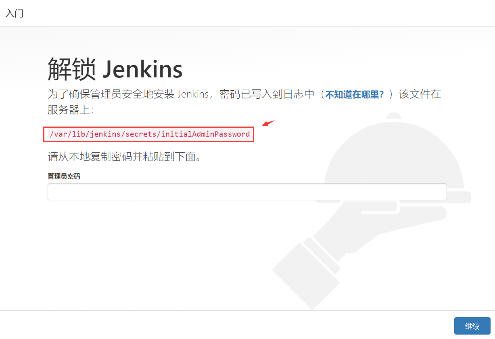
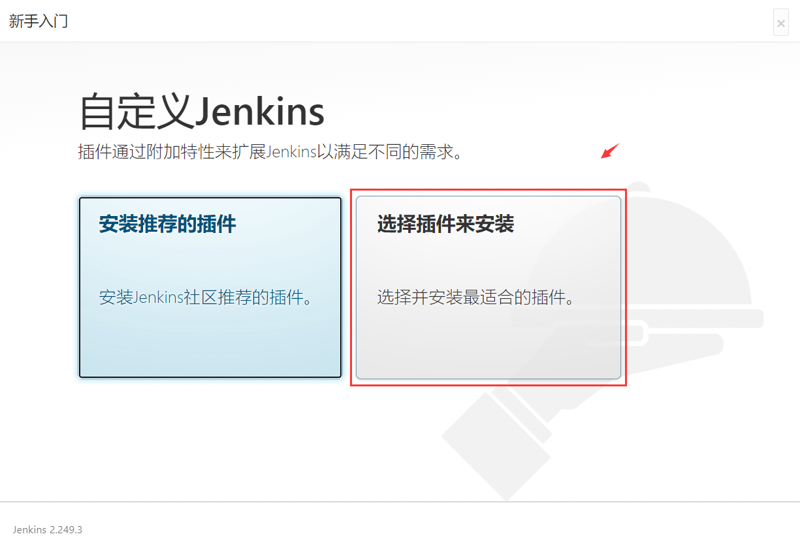
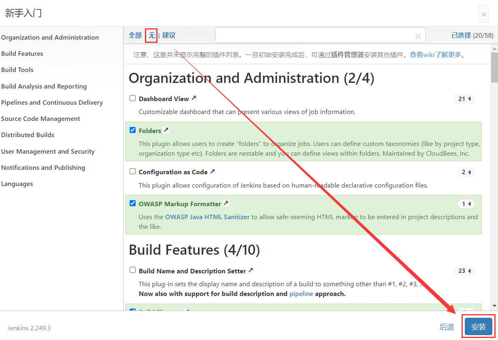
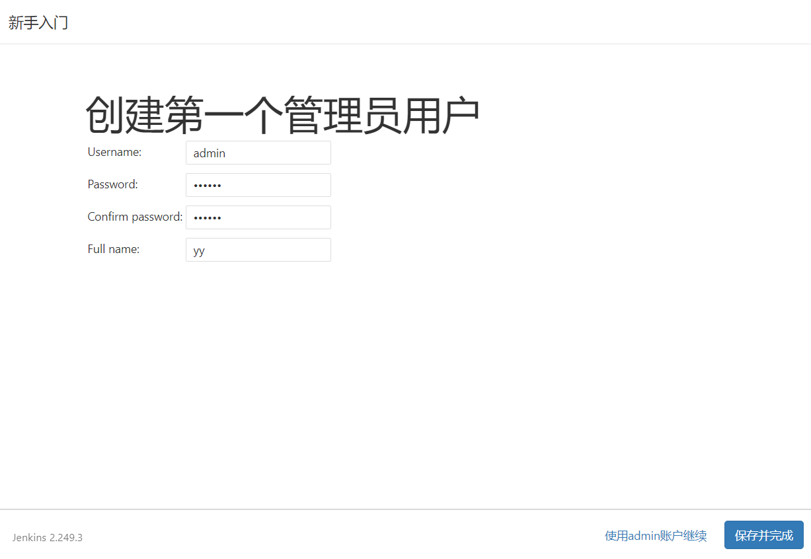
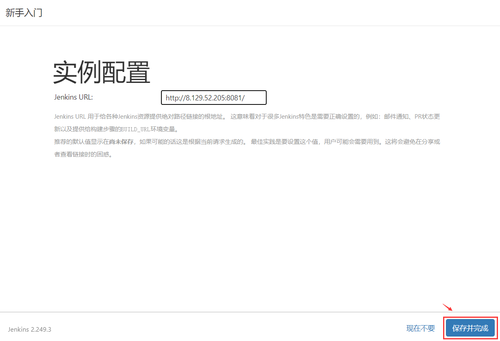

在正式学习Jenkins之前我们需要对两个名词有一定了解，其一是DevOps，另外一个就是CI/CD。
何为DevOps？
来自wiki百科介绍
DevOps是一系列软件开发实践，强调开发人员（Dev）和测试人员（QA）及运维人员（Ops）之间的沟通合作，通过自动化流程，使得软件构建、测试、发布更加快捷、频繁和可靠。
简单来说通过DevOps可以将开发、测试、运维三个团队紧密联系在一起，能够使得项目快速迭代、缩短项目上线时间。
需要注意的是DevOps是一种理念，而不是一种技术，在实际工作中落地应用这套理念需要有相对应得技术作为支撑，而CI/CD就是作为DevOps得最佳实践技术手段。
何为CI/CD？
持续集成 （Continuous integration，简称CI）
持续集成是一种开发实践，它倡导团队成员需要频繁的集成他们的工作，每次集成都通过自动化构建（包括编译、构建、自动化测试）来验证，从而尽快地发现集成中的错误。让正在开发的软件始终处于可工作状态，让产品可以快速迭代，同时还能保持高质量。
持续交付（Continuous Delivery）
持续交付是持续集成的延伸或者看作持续集成的下一步，它将集成后的代码部署到类生产环境，确保可以以可持续的方式快速向客户发布新的更改。如果代码没有问题，可以继续部署到生产环境中。它强调的是，不管怎么更新，软件是随时随地可以交付的。
持续部署（Continuous Deployment）
持续部署是持续交付的下一步，在持续交付的基础上，由开发人员或运维人员定期向生产环境部署稳定的构建版本，持续部署的目标是代码在任何时刻都是可部署的，并可自动进入到生产环境。
而CI/CD整套流水线体系的运行我们需要Jenkins这样的平台去支撑。
安装配置JDK环境
从官网下载jdk压缩包，拷贝到linux系统opt目录下
http://www.oracle.com/technetwork/java/javase/downloads/jdk8-downloads-2133151.html
解压：
1 | tar -xzvf jdk-8u121-linux-x64.tar.gz |
配置环境变量，/etc/profile文件每个用户登录时都会运行的环境变量设置
1 | vim /etc/profile |
在最末尾进行配置
1 | export JAVA_HOME=/opt/jdk1.8.0_121 |
注意：JAVA_HOME需要配置为本地JDK家目录
使配置生效
1 | source /etc/profile |
验证JDK配置
1 | java -version |
安装配置Jenkins
从官网下载Jenkins rpm包
1 | wget https://pkg.jenkins.io/redhat-stable/jenkins-2.249.3-1.1.noarch.rpm |
从官网下载可能速度较慢，可以换成清华的地址：https://mirrors.tuna.tsinghua.edu.cn/jenkins/redhat-stable/
安装Jenkins
1 | rpm -ivh jenkins-2.249.3-1.1.noarch.rpm |
启动Jenkins
1 | systemctl start jenkins |
可能遇到的报错：
1 | Starting Jenkins bash: /usr/bin/java: No such file or directory |
解决方案： 添加java命令的的软链接
1 | ln -s /opt/jdk1.8.0_121/bin/java /usr/bin/java |
修改Jenkins端口号
默认Jenkins会使用8080端口，此端口会被很多程序使用，比如tomcat
编辑JENKINS_PORT配置选项
1 | vim /etc/sysconfig/jenkins |
重启Jenkins
1 | systemctl restart jenkins |
使用Jenkins
访问Jenkins通过http://你的服务器ip地址:8081即可访问
一、初始化配置，进入到对应目录通过cat命令查看初始化密码
cat /var/lib/jenkins/secrets/initialAdminPassword

二、自定义插件进行安装

三、勾选【无】选择安装，这里不选择插件安装是因为插件可能会下载失败，我们可以选择后续再去安装。

四、填写管理员用户信息

五、点击保存并完成即可
